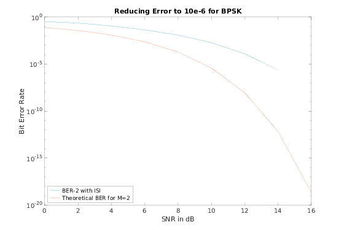
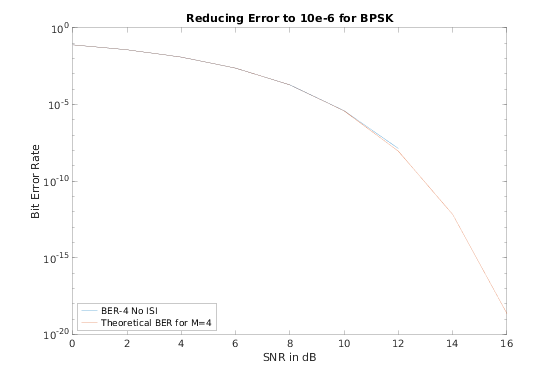
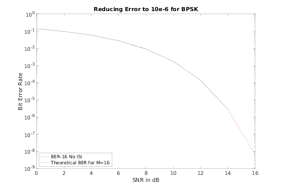
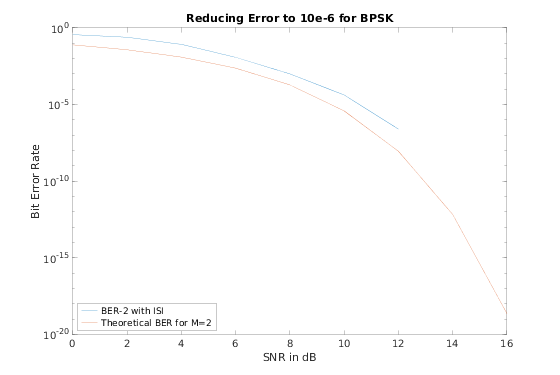

Contents
% A skeleton BER script for a wireless link simulation clear all;clc; close all
part a
% For the final version of this project, you must use these 3 % parameter. numIter = 20000; % The number of iterations of the simulation nSym = 1000; % The number of symbols per packet SNR_Vec = 0:2:16; lenSNR = length(SNR_Vec); m_ary = [2, 4, 16]; % The M-ary number, 2 corresponds to binary modulation %chan = 1; % No channel chan = [1, 0.2, 0.4]; % moderate ISI %chan = [0.227 0.460 0.688 0.460 0.227]'; % Not so invertible, severe ISI tic; trainlen = 300; %we use 300 training bits in this case displayStr = ["BER-2 with ISI","BER-4 No ISI", "BER-16 No ISI"]; % for housekeeping with plots for it=1:length(m_ary) M = m_ary(it); berVec = zeros(numIter, lenSNR); parfor ii = 1:numIter % we generate a random decimal message everytime msg = randi([0, M-1], nSym*(log2(M)), 1); % Generate random bits % If you increase the M-ary number, as you most likely will, you'll need to % convert the bits to integers. See the BIN2DE function % For binary, our MSG signal is simply the bits % we turn it into bits here. The transpose is so we can columnize. % we use this to calculate biterr rate, but do not send this % explicitly bits = de2bi(msg, 'left-msb').'; %transpose here bits = bits(:); for jj = 1:lenSNR % one iteration of the simulation at each SNR Value tx = qammod(msg,M); % BPSK modulate the signal if M == 2 % We have have the possibility, for testing, to see what % happens when there is no channel. if isequal(chan,1) txChan = tx; txNoisy = txChan; else txChan = filter(chan,1,tx); % Apply the channel txNoisy = awgn(txChan,SNR_Vec(jj)); % Add AWGN % Equalizer % Originally we tried the linear equalizer but could % not get it down enough, so we switched to dfe % eq1 = lineareq(6, lms(0.01)); % txNoisy = equalize(eq1,txNoisy,tx(1:trainlen)); % Equalize. %txNoisy = filter(eq1.weights, 1, txNoisy); eq1 = dfe(12,6, lms(0.01)); eq1.SigConst = qammod(0:M-1, M, 'UnitAveragePower', true); eq1.ResetBeforeFiltering = 1; txNoisy = equalize(eq1,txNoisy,tx(1:trainlen)); % Equalize. end else % if we are 4-ary or 16-ary just add noise txNoisy = awgn(tx, SNR_Vec(jj) + 10*log10(log2(M)),'measured'); end rx = qamdemod(txNoisy,M); % Demodulate the signal % Convert the received message to bits. % the transpose and the rx(:) is housekeeping - conceptually we are % taking each row, appending it after the previous row, but we do % this transposed since we are working with columns rxTmp = de2bi(rx, 'left-msb').'; %transpose here rxBits = rxTmp(:); % Compute and store the BER for this iteration % We're interested in the BER, which is the 2nd output of BITERR [~, berVec(ii,jj)] = biterr(bits(trainlen+1:end), rxBits(trainlen+1:end)); end % End SNR iteration end % End numIter iteration % Compute and plot the mean BER ber = mean(berVec,1); % here we plot the figures figure(it); semilogy(SNR_Vec, ber, 'DisplayName', displayStr(it)) hold on; % plot different theoreticals depending on M if M == 2 berTheory2 = berawgn(SNR_Vec,'psk', 2,'nondiff'); semilogy(SNR_Vec,berTheory2,'DisplayName', 'Theoretical BER for M=2') elseif M == 4 berTheory4 = berawgn(SNR_Vec,'qam', 4,'nondiff'); semilogy(SNR_Vec,berTheory4,'DisplayName', 'Theoretical BER for M=4') elseif M == 16 berTheory16 = berawgn(SNR_Vec,'qam', 16,'nondiff'); semilogy(SNR_Vec,berTheory16, 'DisplayName', 'Theoretical BER for M=16'); end legend('Location', 'southwest') title('Reducing Error to 10e-6 for BPSK'); xlabel('SNR in dB'); ylabel('Bit Error Rate'); end fprintf('Part A: '); toc
Part A: Elapsed time is 1108.923534 seconds.  
part b
% Currently using BPSK with 15-7 BCH encoding tic; numIterations = 10000; % The number of iterations of the simulation % We are allowed roughly 1000 symbols: we use this to find roughly how many words % we can generate for BCH 15-7 % but we use a ceiling function below to calculate precisely how many words % we can send numSymbols = 1000; % After encoding, the number of total bits (including parity) that we use for training numTraining = 150; % SNR vector. Same values as in part a, but separate variable so that part % b can run stand alone. SNR_Vec = 0:2:16; SNRlen = length(SNR_Vec); % same channel too. Moderate ISI chan = [1, 0.2, 0.4]; tic; % We were operating under the assumption that we *had* to use bpsk, but % turns out could have used QAM M = 2; % We use 15-7 BCH codeWordLen = 15; msgLen = 7; % We wanted to find the actual number of symbols % the ceiling is to round up the number of words; % later, we use num words * msgLen to figure out how many bits we can % generate, knowing that encoding will add 8 parity bits to each symbol numWords = ceil(numSymbols/codeWordLen); % number of training bits that we had to take from the original message trainingBits = (numTraining/codeWordLen) * msgLen; %make a 0 vector BERvec2 = zeros(numIterations, SNRlen); % We use the comm BCH encoder and decoder objects. Make them once and reuse enc = comm.BCHEncoder(codeWordLen, msgLen); dec = comm.BCHDecoder(codeWordLen, msgLen); parfor ii=1:numIterations % make a msg that is number of msg bits long, such that after encoding msg = randi([0, M-1], msgLen * numWords, 1); % BCH encode it. 469 bits generated, 1005 symbols transmitted msg_enc = step(enc, msg); for jj=1:SNRlen tx = qammod(msg_enc, M); % modulate the signal txChan = filter(chan,1,tx); % Apply the channel txNoisy = awgn(txChan,SNR_Vec(jj)); % add AWGN % using feedforawrd and feedback taps improved the BER eq1 = dfe(12,6, lms(0.01)); eq1.SigConst = qammod(0:M-1, M, 'UnitAveragePower', true); eq1.ResetBeforeFiltering = 1; % equalize txNoisy = equalize(eq1,txNoisy,tx(1:numTraining)); rx = qamdemod(txNoisy, M); % determining how much of the message was used for training bits % and thus cannot be used for calculating BER % #tb/15 = #sets % (#tb % 15) - 8 = # of extra bits to take from a codeword. If % negative, we only take complete words for the training bits dec_msg = step(dec, rx); [~, BERvec2(ii,jj)] = biterr(msg(trainingBits+1:end), dec_msg(trainingBits+1:end)); end end ber2 = mean(BERvec2,1); % grab last non zero value and report on screen ber2(find(ber2,1,'last')) % plot the figure figure('Name', 'Part B'); semilogy(SNR_Vec, ber2, 'DisplayName', "BER-2 with ISI") hold on; berTheory2 = berawgn(SNR_Vec,'psk', 2,'nondiff'); semilogy(SNR_Vec,berTheory2,'DisplayName', 'Theoretical BER for M=2') legend('Location', 'southwest') title('Reducing Error to 10e-6 for BPSK'); xlabel('SNR in dB'); ylabel('Bit Error Rate'); fprintf('Part B: '); toc
ans = 2.5063e-07 Part B: Elapsed time is 530.332717 seconds.